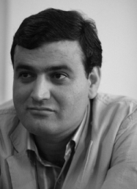

پذيرش > مقالات > خارج از چارچوب > پیوستگی جنبشهای دانشجویی و زنان؛ طرحی برای آینده
 نگاهی به ارتباط جنبش های اجتماعی نگاهی به ارتباط جنبش های اجتماعی

 پیوستگی جنبشهای دانشجویی و زنان؛ طرحی برای آینده پیوستگی جنبشهای دانشجویی و زنان؛ طرحی برای آینده
3 تیر 1387 - عبدالله مومنی - نسخه قابل چاپ
رابطه جنبشهای اجتماعی با دموکراسی رابطه ای پر فراز و نشیب بوده است. گاهی در دموکراسی های ضعیف و لرزان یک جنبش پوپولیستی با ایدئولوژی فاشیستی موجب براندازی نظم دموکراتیک می شود و گاه نظیر آنچه در لهستان اتفاق افتاد یک جنبش اجتماعی با شکستن ساختارهای غیر دموکراتیک گذار به دموکراسی را ممکن می سازد. به هر روی بسیاری از نظریه پردازان گذار نقش ویژه ای برای جنبشهای اجتماعی در مسیر گذار به دموکراسی قائلند.
اصولا برچیده شدن ساختارهای غیردموکراتیک در شرایط فقدان یک جنبش اجتماعی فراگیر که خواست های دموکراتیک را پشتیبانی کند الزاما منجر به استقرار دموکراسی نخواهد شد، از این رو جنبشهای اجتماعی در دو مرحله شکستن ساخت دولت مطلقه غیر دموکراتیک و پس از آن حرکت به سوی ساختارهای حقیقی و حقوقی دموکراتیک حائز اهمیت هستند. در این بین همبستگی جنبش های اجتماعی نیز در تقویت جامعه مدنی، فراخ تر کردن عرصه عمومی و فشار بر دولت برای رفع موانع می تواند بسیار مفید و مثمر ثمر باشد.
در ایران نیز جنبش هایی نظیر زنان، کارگران، دانشجویی و قومی وجود دارند. البته در کنار اینها وجود جنبش سبکهای مختلف زندگی نیز با خصوصیتی به ظاهر غیرسیاسی اما در واقع در تعارض با وضع موجود و ایدئولوژی رسمی غیرقابل انکار است. به نظر می رسد حرکت این جنبشها در بستر جنبش عام دموکراسی خواهی ایرانیان می تواند زمینه و بستر مناسبی برای گذار به دموکراسی فراهم کند. در واقع دموکراسی و حقوق بشر در معنای وسیع خود می توانند تامین کننده خواستهای تمامی این جنبشهای اجتماعی باشند، از این رو حل مسائلی نظیر حقوق زنان و به رسمیت شناخته شدن حقوق سایر طیف های فعال در جامعه مدنی نظیر کارگران، دانشجویان و...در گرو حرکت کلی جامعه ایران در مسیر استقرار دموکراسی و تحقق حقوق بشر است و به نظر می رسد عموم فعالان جنبشهای مختلف اجتماعی در ایران به خوبی به این نکته واقف باشند.
در این میان نقش و جایگاه جنبش زنان و تعامل آن با جنبش دانشجویی از اهمیت به سزایی برخوردار است. زنان نیمی از جمعیت کشور هستند و تحرک آنها برای کسب حقوق مدنی و سیاسی به تحرک ناگزیر همه ساختارها خواهد انجامید. در واقع حضور قدرتمند جنبش زنان در عرصه جامعه مدنی با توجه به خواستهای برابری خواهانه ای که طیف گسترده ای از مبارزه با تعدد زوجات گرفته تا مبارزه برای کسب فرصتهای برابر با مردان جهت اشتغال در مناصب مهم سیاسی، قضایی و اداری را در بر می گیرد، هم وضع موجود و هم ایدئولوژی رسمی پشتیبان وضع موجود را به چالش می کشد و در عین حال خواستهای برابری خواهانه را به چشمه هایی جوشان از دل جامعه تبدیل می کند.
در واقع در شرایط کنونی جایگاه و موقعیت جنبش زنان به گونه ای است که هر موفقیت این جنبش و هر گامی که این جنبش به جلو بر می دارد به منزله نزدیک شدن هرچه بیشتر جامعه ایران به یک نظم دموکراتیک مبتنی بر حقوق بشر و کرامت انسان است، اینگونه است که حتی خواستهای غیرسیاسی جنبش زنان به محلی برای چالش همه نیروهای دموکراسی خواه با ساختارهای غیردموکراتیک تبدیل می شود. حضور جنبش زنان در عرصه جامعه مدنی و نقش¬آفرینی¬اش در فرآیند گذار، یک اثر و فایده بسیار مهم دیگر نیز دارد؛ در واقع زنان نه تنها با ساختارهای غیردموکراتیک مبارزه می کنند بلکه فراتر از آن با یکی از عوامل اصلی بازتولید استبداد در ایران یعنی ساختار اجتماعی پدرسالار به مبارزه برخاسته اند، در واقع قوت جنبش زنان پدرسالاری را تضعیف و احتمال باز تولید استبداد را از این طریق به حداقل می رساند. ضمن اینکه زنان ایرانی به لحاظ کیفیت آموزش و سطح توسعه¬یافتگی شان می توانند منشا و الهام¬بخش دیگر جوامع همجوار برای تحرک دموکراتیک باشند، به این ترتیب جنبش زنان در ایران می تواند تکیه گاهی قوی برای تمام نیروهای مدرنیست و مبارزان علیه بنیادگرایی دینی در تمام منطقه خاورمیانه باشد. از سوی دیگر جنبش دانشجویی که حرکت آن در افق دموکراسی و حقوق بشر از سالهای آغازین دهه 80 سرعت بیشتری گرفته است در حال حاضر و در شرایطی که عموم جنبشهای اجتماعی با سرکوب شدید دولت مواجهند با استفاده از حداقل فضای موجود در دانشگاهها می کوشد تا تنها صدای بلند اعتراض به نقض حقوق بشر در ایران باشد که البته دانشجویان در این راه هزینه های بسیاری نیز داده اند.
در این راستا و بر مبنای توان و ظرفیت این دو جریان فعال در جامعه مدنی باید پذیرفت که در شرایط فعلی و با فشار شدیدی که هم بر فعالان دانشجویی و هم بر فعالان جنبش زنان وارد می شود و با توجه با خواستهای مشترک جنبش زنان و جنبش دانشجویی می توان طرحی نو از ارتباط این دو جنبش در انداخت. دانشجویان پیش از این با حمایتشان از تجمعات و حرکات اعتراضی بخصوص تجمعات 22 خرداد 1384 و1385 و به دنبال آن حمایت از حرکت کمپین یک میلیون امضا اشتراک خواستهایشان با بسیاری از خواسته¬های جنبش زنان را نشان داده¬اند. اکنون فعالان دانشجویی و فعالان زنان می توانند همکاری سازمان یافته تری را به نحوی سامان دهند که هم از شدت فشارها بکاهند و هم از فضای حداقلی موجود در دانشگاهها به سود اهداف هر دو جنبش استفاده مطلوب کنند.
از این رو بر مبنای ایده برخی فعالان دانشجویی که متضمن همبستگی با جنبشهای اجتماعی و حمایت از خواسته ها و مطالبات سایر جنبش های اجتماعی است و در عین حال تحقق آنها می تواند به تقویت جنبش دموکراسی خواهی عام نیز بشود، حمایت دانشجویان از مطالبات برابری خواهانه زنان در کنش های دانشجویی شان بایستی در اولویت باشد و ضمن حمایت ودفاع شان از جنبش زنان می توانند با درس آموزی از تجارب جنبش زنان در زمینه حرکات اعتراضی و بخصوص کمپین یک میلیون امضاء به جمع¬آوری امضا از دانشجویان در دفاع از استقلال و آزادی های آکادمیک ودفاع از حق آزادانه تحصیل و مقابله با گزینش های عقیدتی–ایدئولوژیک بپردازند که اینگونه فعالیتهای جمعی و حرکات اعتراضی هم می تواند تضمین کننده ارتباط بیشتر فعالان دانشجویی با بدنه دانشجو باشد و هم حرکتهای دانشجویی را از جنبه صرفا اعتراضی و سلبی به حرکتها و جنبه های ایجابی هدایت کند. در عین حال فعالان جنبش زنان می توانند جمع آوری امضا برای کمپین زنان را به نحو سازمان یافته تری در دانشگاهها ادامه دهند و از توان دانشجویان برای جمع آوری امضاء استفاده ی بیشتری کنند.
جنبش زنان باید تکیه بیشتری بر زنان تحصیلکرده دانشجو در درون دانشگاهها داشته باشد. کافیست نگاهی به آمار دانشجویان دختر در دانشگاههای کشور بیندازیم تا به آسانی ضرورت ارتباط بیشتر فعالان جنبش زنان با دانشگاه و جنبش دانشجویی را دریابیم. جنبش دانشجویی با طرح مطالبات زنان هم می تواند بسترهای مشارکتی را برای دانشجویان دختر به عنوان بخش قابل توجه – هم از نظر کمی و هم از نقطه نظر کیفی - دانشگاه در کنش های دانشجویی شان فراهم کند و هم درنگاه کلی به تقویت پیش¬نیازها و مقوله های فرایند گذار به دموکراسی می انجامد و همراهی، حمایت و تلاش در جهت عملی شدن مطالبات زنان می تواند به قوت جنبش زنان بیانجامد و به استحکام زیربناهای دموکراتیک در جامعه کمک کند. فعالان زنان و کمپین نه تنها برای جمع آوری امضا می توانند روی ظرفیت تعداد زیاد دانشجو حساب کنند بلکه از منظر کیفی نیز چهره های تاثیر گذار جنبش زنان باید به فکر تربیت نیروهای آموزش یافته برای این جنبش باشند تا بر عمق و گستره آن بیفزایند و البته در این خصوص نیاز به ارتباط و همکاری بیشتر این دو جریان فعال در جامعه مدنی وجود دارد. به هر روی این تنها طرح واره ای بود برای نزدیکی بیشتر جنبش زنان با جنبش دانشجویی، می توان بیش از این در مورد آن به بحث نشست و ابعاد و جوانب مختلف آن را سنجید.
ارسال به
بالاترین
،
توییتر
،
فریندفید
،
فیسبوک
در همين بخش :
 8 مارس روزی که نمی توان از ما دریغ کرد 8 مارس روزی که نمی توان از ما دریغ کرد
با طلاق توافقی از حقارت و کتک و فحش رها شدم /گزارشی از دادگاه محلاتی: مریم مالک
تجمع مادران عزادار در رشت
تغییر ممکن است/ جلوه جواهری(26 روز پس از بازداشت کاوه مظفری)
گامهایی که با تزلزل نا آشنایند/ گرامی داشت چهلم ندا در رشت
ديگر بخش ها :
طرح یک میلیون امضا
|
مقالات
|
سایت نوشته ها
|
اخبار
|
گزارش كمپين
|
گفت و گو
|
علیه سکوت
|
كوچه به كوچه
|
نامه های شما
|
گزارش ویژه
|
گفتگو با اعضا
|
ویژه سالگرد کمپین
|
تصویر برابری
|
دل آرام علی
|
تریبون
|
مقالات
|
تاریخ شفاهی
|
خارج از چارچوب
|
کتابخانه
|
درباره کمپین
|
کمپین در شهرها
|
کمپین در بند
|
صدای تغییر
|
ویژه 22 خرداد
|
لایحه حمایت از خانواده
|
گالری
|
عشا مومنی
|
امیر یعقوبعلی
|
خدیجه مقدم
|
راحله عسگری زاده و نسیم خسروی
|
پروین اردلان،جلوه جواهری، مریم حسین خواه، ناهید کشاورز
|
زینب پیغمبرزاده
|
سعیده امین، سارا ایمانیان، محبوبه حسین زاده، ناهید کشاورز و همایون نامی
|
احترام شادفر
|
نسیم سرابندی زاده،فاطمه دهدشتی
|
وبلاگ مهمان
|
پرونده خرم آباد
|
دستگیری ها
|
مریم مالک
|
پرستو اللهیاری
|
مهرنوش اعتمادی
|
سمیه رشیدی
|
Other Languages
|
همراهان
|
«فراخوان کمپین ده روز با بهاره هدایت»
| English
|